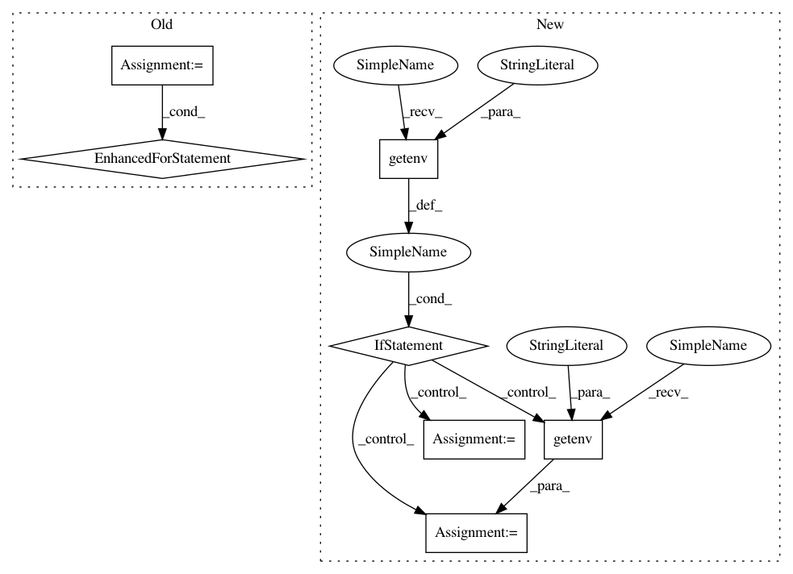

7f64d8b023147927b74139bbdbbffa1ffca536bc,py/kubeflow/kubeflow/ci/kfctl_go_test_utils.py,,get_config_spec,#Any#Any#Any#Any#Any#,131
Before Change
// TODO(jlewi): We should also point to a specific commit when triggering
// postsubmits from the kubeflow/manifests repo
for repo in repos:
for key, value in repo.items():
if value == "https://github.com/kubeflow/manifests/archive/master.tar.gz":
repo["uri"] = str("https://github.com/kubeflow/manifests/archive/pull/" + str(
os.getenv("PULL_NUMBER")) + "/head.tar.gz")
logging.info(str(config_spec))
return config_spec
def kfctl_deploy_kubeflow(app_path, project, use_basic_auth, use_istio, config_path, kfctl_path, build_and_apply):
After Change
version = None
if os.getenv("PULL_PULL_SHA"):
// Presubmit
version = os.getenv("PULL_PULL_SHA")
// See https://github.com/kubernetes/test-infra/blob/45246b09ed105698aa8fb928b7736d14480def29/prow/jobs.md//job-environment-variables // pylint: disable=line-too-long
elif os.getenv("PULL_BASE_SHA"):
version = os.getenv("PULL_BASE_SHA")
if version:
repo["uri"] = ("https://github.com/kubeflow/manifests/archive/"
"{0}.tar.gz").format(version)
logging.info("Overwriting the URI")
In pattern: SUPERPATTERN
Frequency: 3
Non-data size: 7
Instances
Project Name: kubeflow/kubeflow
Commit Name: 7f64d8b023147927b74139bbdbbffa1ffca536bc
Time: 2019-10-30
Author: jeremy+github@lewi.us
File Name: py/kubeflow/kubeflow/ci/kfctl_go_test_utils.py
Class Name:
Method Name: get_config_spec
Project Name: Theano/Theano
Commit Name: b7d23606db54f1b60d0efae50922549234b20661
Time: 2017-07-31
Author: abergeron@gmail.com
File Name: theano/configdefaults.py
Class Name:
Method Name:
Project Name: Theano/Theano
Commit Name: f8a7c0edb2c4123d032fa32073c7356a7a17d9f0
Time: 2017-08-07
Author: stevenbocco@gmail.com
File Name: theano/configdefaults.py
Class Name:
Method Name: